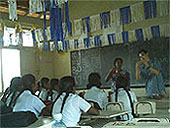
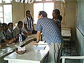

松本直素様のスリランカでの1日の流れ |
| 7:00 |
起床。
起きるのは７時ですが、こちらには日本にいない鳥（でもスリランカでは至る所にいる。オウムなのかなぁ・・・未確認！）が朝早くから華麗な声で朝を教えてくれるので、目覚めはもっと早いです。
起きると、周りには見たことの無い、鳥、虫、動物がいて楽しませてくれます。
|
7:30 |
まずはシャワーから。
お湯はでませんが、気候が暖かく、水（井戸水なんです）も、比較的暖かいので気持ちよく浴びられます。
その後、歯を磨いていると、お母さん（お母さんのことは、「アンマ～」って言います）がミルクティーを入れてくれます。
ミルクも砂糖もたっぷり入れるのがスリランカ流。暑いので砂糖が欲しくなるのかもしれません。日本では砂糖を入れない私ですが、おいしく紅茶をいただいています。
さすが本場だけに香りと味わいの深さは、なかなか日本では味わうことができません。また、紅茶をくれるときのお母さんの優しい笑顔がとても素敵です。
|
8:00 |
朝食。
毎日、カレーが出ます。 日本で想像するようなカレーと違い、さらさらとした印象。
小皿にいろいろな種類のカレーがあって、少しづつとって、ご飯（ご飯の代わりにロティだのホッパーだのスリランカ独自のものが出てくることもある。）と混ぜて食べます。
当然、食べてみる価値、十分！
|
8:30 |
外出。
今日は、近くの学校を訪問して、日本語教師のボランティア。いつものように、サーンタさんが迎えに来てくれる。当たり前だけど、先生をしたことはないので、ちょっと緊張しながら学校へ。
また、行ったところが、女子校だったので、さらにちょっと緊張。入ったとたん、そのエネルギーにびっくり。どこの国も子供はとても可愛いですが、この国の子供達は特に目がきれいで印象的です。目が会うと皆、微笑んでくれるので、こちらが癒された気持ちになります。
いざ、教室に入って、「グッド・モーニング！」と声を掛けると、皆から「おはようございます！」という明るい返事が！
日本語を習っているとは聞いていたのですが、挨拶、数の数え方、体の場所の名前など、教えようと思っていたことはほとんどクリアしていてびっくりしました。
  |
一緒に折り紙をしたりして、あっという間の楽しい時間を過ごしました。帰りにサインをねだられたりして・・・。皆で折った鶴にサインしました。
来年、お父さんの仕事の関係で、日本に来るっていう子がいて、住所を教えてあげました。連絡くるかな？ |
12:00 |
ステイ先に帰宅。
昼食の後、午後のレッスンが始まるまでに洗濯をすることにしました。スリランカではほとんど手洗い。ステイ先の家にも、洗濯機はあるのですが、面倒だからという理由で、誰も使わない・・・。
外の井戸で、たらいを使って手洗いします。洗濯していると、すぐそばまで、鳥やらリスやら寄ってきて遊んでいます。
「おいら白雪姫かい！」って気分になります。
|
14:00 |
しばしの休息。
お母さんに入れてもらった紅茶を飲みながら、本を読んだり、メールをチェックしたり、はたまた昼寝をしてみたり。幸せなひと時です。
|
15:30 |
レッスン開始。
さあ！いよいよ本来の目的の英語の授業です。
19:30までと時間が長いので気合が必要です。先生は近所に住んでいて、懐中電灯を片手にやってきます（帰りのためです）。
もっとも、堅苦しい授業では無く、スリランカと日本の文化の違いや、食べ物の違いなど、興味のあることを題材に、フリートークをしながら、ボキャブラリーを増やし、リスニングとスピーキングを中心に練習をするという形なので、それほど、長くは感じません。それでも、間にお母さんが持ってきてくれる紅茶は、すごく楽しみ！（おいしいし、休憩できる！）
|
20:00 |
夕食。
こちらでは、皆で食べるという習慣がないので、皆好きな時間にばらばらに食べます。けれど、皆、近くにいてくれて、シンハラ語（現地の言葉）を教えてくれます。人によっては、シンハラ語の方が上達してしまうという噂もちらほら。
|
| 22:00 |
リラックスタイム。
ステイ先の家族と一緒にテレビを見たり、話をしたり。楽しい、ゆっくりとした時間を過ごします。（あっ！ときどき英語の宿題が出ることも！しかたがないので、頑張ってやります）。外には風の音、虫の声、優しい時間が流れています。
|
23:00 |
就寝。
お休みなさい。 |